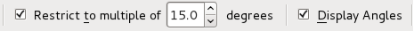

- Specify the start point of the first line segment. You can use the mouse
or enter a coordinate in the console.
- Specify the endpoint of the first line segment.
- Specify the endpoints of additional line segments. Click the 'Close'
button in the options tool bar to close the sequence:

- If you need to undo a single line segment, you can do so by clicking
the 'Undo' button:

- If you want to redo a single line segment, you can do so by clicking
the 'Redo' button:

- If you want to restrict the angle of line segments, you can do so by
clicking the 'Restrict to multiple of' button, and entering an angle in the
degrees spin box:

- If you want to preview the angle of a line segment, you can do so by
clicking the 'Display Angles' button:
